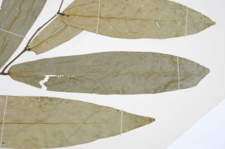
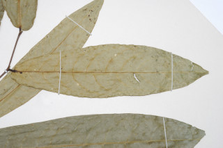
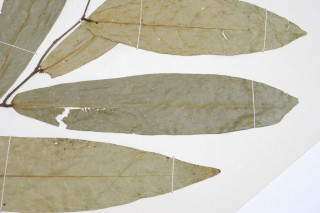
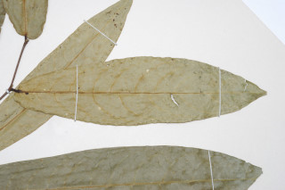

Images :
 




| Habit : | Trees about 18 m tall. |
| Leaves : | Leaves simple , alternate , spiral ; petiole stout, ca.0.5 cm long; lamina 10-25 x 3-6 cm, elliptic-oblong to oblong-lanceolate , apex acute , base rounded or subcordate , margin entire , glabrous ; midrib raised above; secondary_nerves 12-14 pairs, tertiary_nerves weakly reticulo-percurrent . |
| Inflorescence / Flower : | Inflorescence panicles in axillary fascicles . |
| Fruit and Seed : | Nut , obovoid or oblong , apiculate , 2.5 x 1.5 cm; fruiting_calyx woody , truncate . |